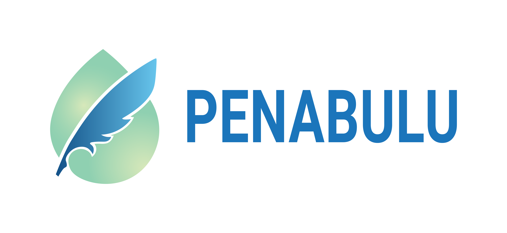

Buruk Bakul
- 10.420 pohon
- 2,65 ha
- 100 m Wave Breaker
- 1 Rumah Bibit
Menyajikan informasi spasial yang terverifikasi untuk mendukung pengelolaan lahan basah, gambut, mangrove, dan ekosistem lainnya secara berkelanjutan melalui restorasi, rehabilitasi, pemantauan lapangan, pemberdayaan masyarakat, serta kemitraan strategis yang berbasis data.
Menghubungkan data spasial, pemantauan lapangan, dan pelaporan masyarakat dalam satu platform untuk mendukung pengelolaan lahan basah dan ekosistem yang berkelanjutan.
Estimasi diturunkan dari data WebGIS yang sudah ada, tanpa tabel baru.
Data yang berkontribusi: area restorasi mangrove, area restorasi gambut/agroforestri, bibit tertanam, rumah bibit, sekat kanal, FDRS, monitoring lapangan, pelatihan masyarakat, dan dokumentasi kegiatan.
Semua kegiatan kami dirancang untuk mendukung pencapaian Tujuan Pembangunan Berkelanjutan.
Angka ini mengikuti layer administrasi desa_intervensi.
Data WebGIS menjadi acuan utama dan divalidasi terhadap laporan program.
Buruk Bakul
Buruk Bakul • Kelapa Pati
Buruk Bakul • Kelapa Pati • Sepahat • Tanjung Kuras
Data WebGIS menjadi acuan utama dan divalidasi terhadap laporan program.
Data terpetakan dihitung dari WebGIS; indikator lainnya dilengkapi dari laporan final.
Sepahat • Temiang
Temiang • Tanjung Kuras • Buruk Bakul • Simpang Ayam
Temiang • Tanjung Kuras • Pencing Bekulo • Buruk Bakul
DurationMay 2026 – February 2027
3 ha target
2 villages
3 units
3 units
1
12 months
1 annual audit
0.0 / 3.0 ha
0 / 3
0 / 3
1 / 2 villages
Liberica Coffee Seedling and Nursery Training – Pedekik Village
Pedekik · 17/07/2026 · Pelatihan Penyemaian dan Pembibitan Kopi Liberika · 36 pesertaInformasi Petapahan mengikuti program Aliansi Kolibri dan data wilayah yang sudah tersedia.
Penilaian awal pertumbuhan dan keberhasilan tanaman di area restorasi.
Penyulaman dilakukan pada PUP 1 untuk mengganti tanaman yang tidak bertahan.
Pemantauan lanjutan untuk melihat perkembangan tanaman dan kebutuhan tindak lanjut.

Strengthening women-led Liberica coffee enterprises and improving peatland ecosystem resilience through sustainable community-based livelihoods in Temiang Village, Riau.